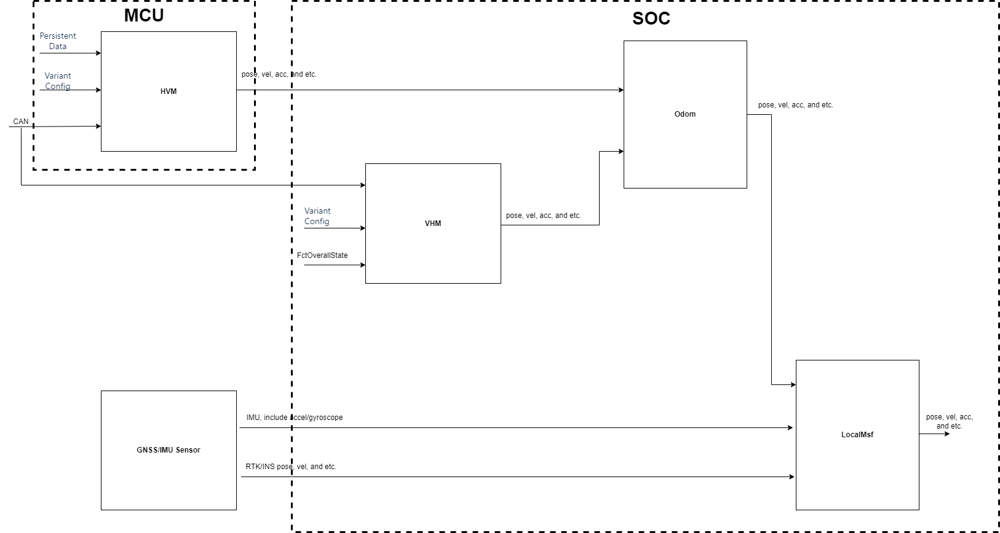

HVM/VHM/Odom/LocalMsf pipeline

HVM module
HVM is the ASIL-B functional security module.The input is the vehicle CAN signal + Vehicle Parameters + Vehicle Specific Parameters. CAN signals mainly include ACU2 (Yawrate, horizontal acceleration), ACU3 (longitudinal acceleration), Onebox1 (one -speed) (wheel pulse and wheel direction), and SAS1 ( Vocket turntable corner)And VCUVOM10 (gear) signal.
The output of this module is for reference HVM signal layer conversion relationship Detailed design ：
Current trajectory.
Wheel angle
Longitudinal acceleration sensor / road slope estimation
Lateral acceleration.
Yaw rate.
Oval course detection.
Wheels standstill.
Vehicle Parameter (e.g. wheel base, wheel track).
Compared with the platform code, HVM adds 2 functions, as follows:
Output a UINT64 size with a accuracy of 1MS for downstream use;
Use CAN acceleration signal+HVM PME algorithm estimation acceleration BIAS fusion new acceleration signal for downstream use;
VHM module
VHM is the ASIL-B functional security module.The input is the vehicle CAN signal + Vehicle Parameters + Vehicle Specific Parameters. CAN signals mainly include ACU2 (Yawrate, horizontal acceleration), ACU3 (longitudinal acceleration), Onebox1 (one -speed) (wheel pulse and wheel direction), and SAS1 ( Vocket turntable corner)And VCUVOM10 (gear) signal.
Pose information output vehicle and sports information of the vehicle. The VHM output interface is mainly: The XY value of the output location, yaw, the absolute value of the driving distance, driving distance, front wheel rotation, speed xy value, acceleration xy value, driving direction, output state, output signal quality, etc.
ODOM module
ODOM is the ASIL-B functional security module.Under the three modes of ParkingActive/DrivingActive/Manual, the input is always Output of VHM and HVM.
The output is divided into POSE, VEHICLE DYNAMICS, Others,, Always from HVM 、 Always from VHM There are obvious changes in the source.
ODOM's Pose, Vehicle Dynamics, Others, Always from HVM 、 Always from VHM The definition is as follows:
|
Vehicle Dynamics |
Others |
Always from HVM |
Always from VHM |
|
m_output.m_velocity m_output.m_acceleration m_output.m_yaw_rate m_output.m_curvature m_output.m_front_wheel_angle m_output.m_rear_wheel_angle m_output.m_steering_wheel_angle m_output.m_move_direction |
m_output.m_timestamp m_output.m_r5_timestamp m_output.m_update_state
|
m_output.m_road_slope_acceleration |
m_output.m_reinit_coordinate_system_origin m_output_buffer m_output.m_position m_output.m_rotation m_output.AbsoluteDrivenDistance_mm_u32 m_output.SignedDrivenDistance_mm_s32 |
In summary, it can be seen that the results of Vehicle Dynamics need to be switched according to the current scene, and the switching logic combines speed information based on the status machine mode sent by the FCT.
ODOM integrates the output results of VHM and HVM, such as filling the lack of XY field for HVM, and at the same time provides an output that is available to ASIL-B downstream.According to the output of downstream demand such as Planning, reduce the signal required by the downstream switching VHM and HVM to find modules.
ODOM integrates the implementation of VHM ABST of W1 Parking, which is responsible for the calculation and output of some functional security information.
LOCALMSF module
QM module, input as a 6 -axis high -precision IMU, RTK/INS POSE, speed, acceleration and other information.QM levels can match more and better solutions for IMU/GNSS sensor hardware selection, RTK differential service, RTK/INS algorithm and other selection.
The output includes working mode, 3D position and attitude, line speed and angle speed, acceleration, etc.Local Loc relies on high -precision IMU, which can output high -precision 3D positions and postures. HPA cross -layer high -speed information Important information source.